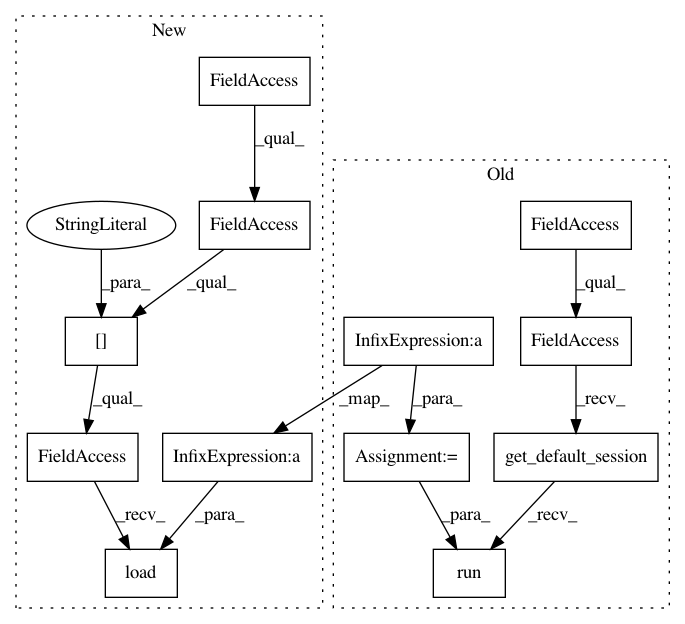

783e415c29c4a4124ea426c824864a32b0f8ee71,src/garage/tf/regressors/gaussian_mlp_regressor.py,GaussianMLPRegressor,fit,#GaussianMLPRegressor#Any#Any#,263
Before Change
0, num_samples_tot,
int(num_samples_tot * self._subsample_factor))
xs, ys = xs[idx], ys[idx]
sess = tf.compat.v1.get_default_session()
if self._normalize_inputs:
// recompute normalizing constants for inputs
feed_dict = {
self._x_mean_var_ph: np.mean(xs, axis=0, keepdims=True),
self._x_std_var_ph: np.std(xs, axis=0, keepdims=True) + 1e-8,
}
sess.run([
self._assign_x_mean,
self._assign_x_std,
], feed_dict=feed_dict) // yapf: disable
if self._normalize_outputs:
// recompute normalizing constants for outputs
feed_dict = {
self._y_mean_var_ph: np.mean(ys, axis=0, keepdims=True),
self._y_std_var_ph: np.std(ys, axis=0, keepdims=True) + 1e-8,
}
sess.run([self._assign_y_mean, self._assign_y_std],
feed_dict=feed_dict)
if self._use_trust_region:
old_means, old_log_stds = self._f_pdists(xs)
inputs = [xs, ys, old_means, old_log_stds]
else:
After Change
// recompute normalizing constants for outputs
self.model.networks["default"].y_mean.load(
np.mean(ys, axis=0, keepdims=True))
self.model.networks["default"].y_std.load(
np.std(ys, axis=0, keepdims=True) + 1e-8)
if self._use_trust_region:
old_means, old_log_stds = self._f_pdists(xs)
inputs = [xs, ys, old_means, old_log_stds]
else:
In pattern: SUPERPATTERN
Frequency: 3
Non-data size: 12
Instances
Project Name: rlworkgroup/garage
Commit Name: 783e415c29c4a4124ea426c824864a32b0f8ee71
Time: 2019-09-05
Author: hegde.nishanth@gmail.com
File Name: src/garage/tf/regressors/gaussian_mlp_regressor.py
Class Name: GaussianMLPRegressor
Method Name: fit
Project Name: rlworkgroup/garage
Commit Name: a295cb67923eeb5ab5390f1541c04e70f67e893a
Time: 2019-10-02
Author: naeioi@hotmail.com
File Name: src/garage/tf/regressors/bernoulli_mlp_regressor.py
Class Name: BernoulliMLPRegressor
Method Name: fit
Project Name: rlworkgroup/garage
Commit Name: b50695e45350a8a4d11bd60ba1801d6ae93eddbf
Time: 2019-09-26
Author: 38871737+avnishn@users.noreply.github.com
File Name: src/garage/tf/regressors/continuous_mlp_regressor.py
Class Name: ContinuousMLPRegressor
Method Name: fit